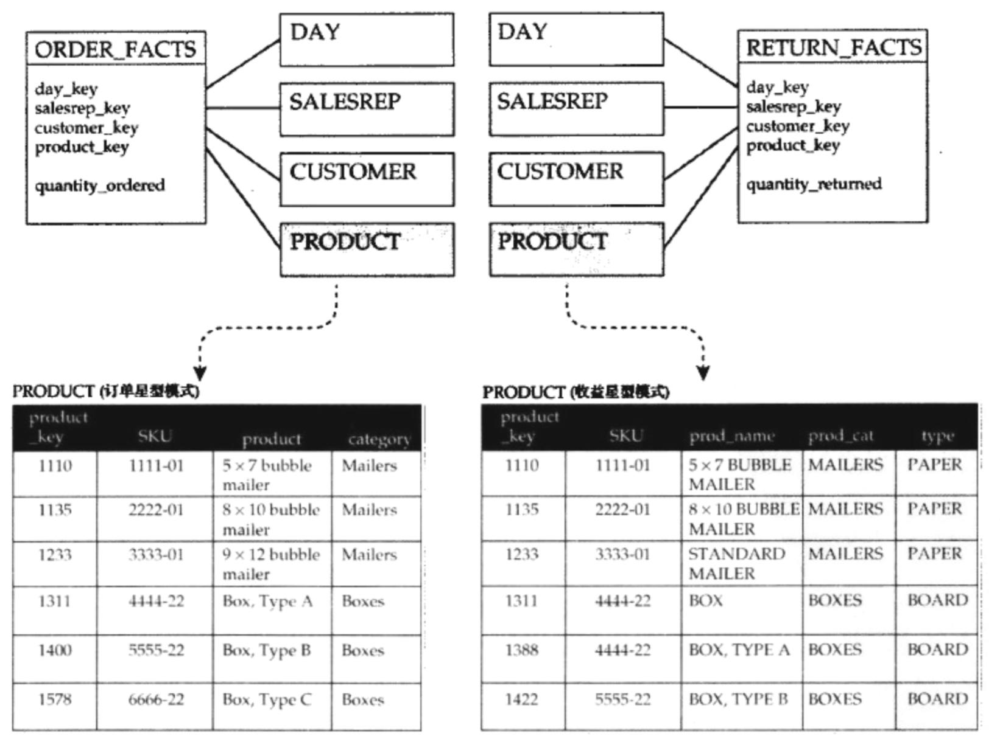
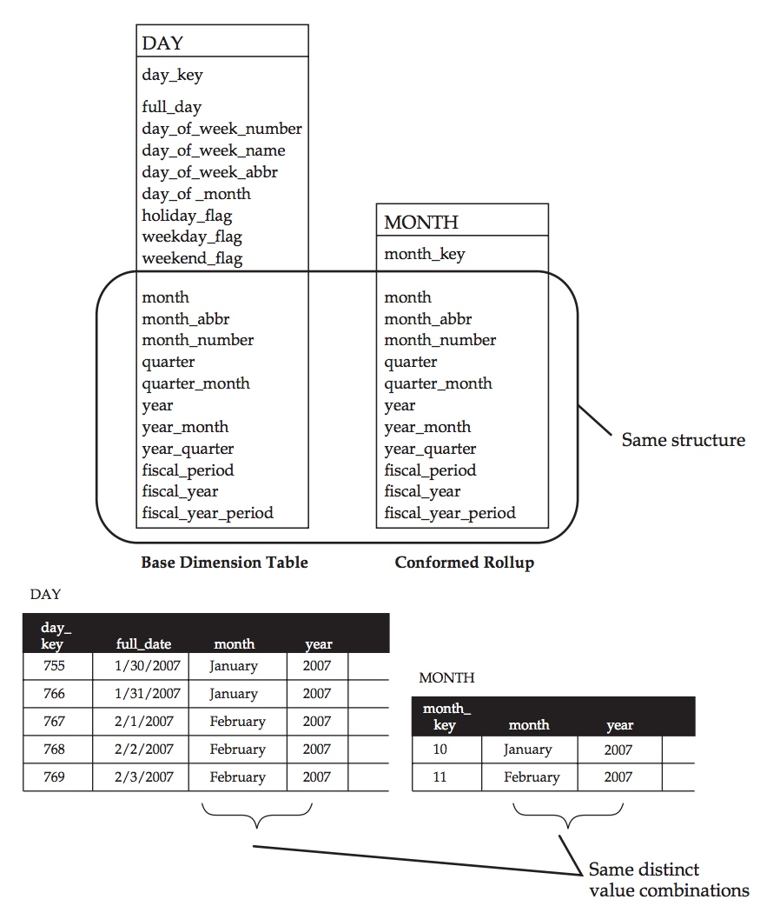
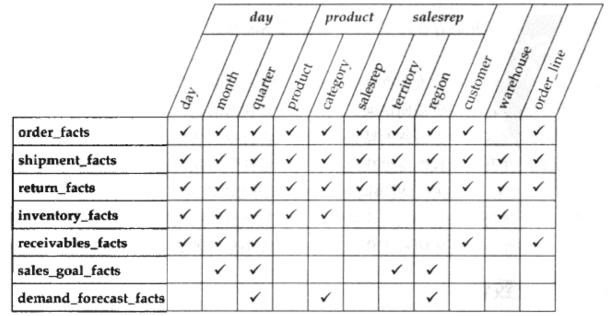

维度表是整个数据仓库的骨架，好的维度表设计能确保整个数据仓库的高可用性，反之不好的维度表设计使得数据仓库可用性大大降低。如果维度表不能实现一致性，那么多个星型模型不能实现横向钻取，从而形成信息孤岛。
本文主要介绍维度表的一致性要求以及问题。
1. 维度与横向钻取
前面提到，多个事实表进行连接是通过横向钻取实现的，而实现横向钻取的前提是维度的一致性。维度是确保将不同过程中的信息集成起来的实现横向钻取活动的关键。当维度的结构或内容不同时，横向钻取就会失败，不同的过程将不能协同。支持横向钻取时，多维表并不需要完全相同。当一个维度表中的属性是另一个维度表属性的子集时，横向钻取也是可以实现的。
1.1 造成横向钻取失败的原因
我们通过以下这个例子来分析横向钻取失败的原因。

图中星型模型描述了订单和收益两个业务过程，可以发现两个星型模型都存在了以下几个维度，Day, SalesRep, Customer, Product。本来我们可以通过这些相同的维度来横向钻取两个业务过程并进行分析。但是实际情况并不如此，通过对比，不难发现在他们的产品维度上存在以下几个差异:
- 维度结构的差异
- 收益星型模型的产品维度有type维度，订单星型模型没有。
- 表示同一事情的列在不同的星型模型中以不同的名字命名。比如收益星型模型的prod_cat和prod_name在订单星型中就叫做了prodict,category。
- 维度内容的差异
- 产品名称和分类的格式的差异。订单星型模型中的数据格式没有区分大小写且包含了标点符号，收益星型模型中的数据格式采用大写且不包含标点符号。当这些值进行join的时候会发现根本连接不起来。
- 名称不一致。订单模型中的产品“9*12 bubble mailer” 在收益模型中对应的为“STANDARD MAILER”
- 在订单星型模型中自然键的4444-22在收益模型中出现了两行。
- 订单星型模型中自然键6666-22收益模型中却没有。
- SKU为5555-22的行在两个星型模型中分配了不同的代理键。
这些问题在进行多个事实表横向钻取时候都会对结果的准确性造成很大的影响。
2. 一致性维度
上文给出了不满足一致性维度的例子，那么什么样子是一致性维度呢。一致性维度的根本要求是，公共属性的结构和内容相同。下文给出了4种一致性维度。
2.1 共享维度表
最常见的维度一致性形式发生在两个星型模型共享相同的逻辑维度时。这个共享可能是同一个物理表，也有可能有两个或者多个等价表组成。只要满足以下两个特性就是共享维度表:
- 表共享相同的结构
- 表共享相同的内容
2.2 一致性上卷维度
保持一致性并不需要维度表完全相同。只要满足以下条件，不同的维度表也能支持横向钻取:
- 表的维度属性是其他表的维度属性的子集
- 公共维度属性具有相同的结构和内容
其中较小的那个叫一致性上卷，较大的那个称为基本维度。

从上图中可以看出，MONTH表的维度属性是DAY表的子集，而这部分结构,比如month和year，具有相同的结构和内容。所以MONTH是一致性上卷，DAY是基础表。
2.3 一致的退化维度
前文讲过，退化维度将维度属性存储在事实表中，往往用于标示事物或者标示文档。相同的退化维度可以在多个事实表中实现，因此可以在退化维度上执行横向钻取。它同样有根本要求：公共属性的结构和内容相同。
2.4 重叠维度
当两个维度出现重叠属性时候，且重叠属性具有共享相同的结构和内容，那么重叠属性可以确保维度表的一致性。这种情况比较少见。
重叠维度和是否需要生成第三章表的独立出重叠维度需要郑重考虑，因为第三章表的出现意味着采用了雪花模型，而一般情况下雪花模型是不提倡的，这在后面文章介绍。同时维护多个维度表的重叠维度也是比较麻烦的
3. 使用矩阵图表来规划一致性维度
一致性维度是维度建模的关键。在进行维度建模时候，有必要使用矩阵图表来规划维度的一致性，下图是利用矩阵图标规划维度一致性的例子。列代表了核心一致性维度，行代表了不同的过程和事实表，可通过在适当交叉点放置标志来阐明一致性。

4. 总结
在Inmon的数据仓库体系中，由于原子数据仓库是用ER模型建立的，所以它的维度一致性是弱化的。而独立的数据集市，只关心单一数据技术，更不需要企业级的一致性问题。只有Kimball的维度模型数据仓库维度的一致性。
本文完。